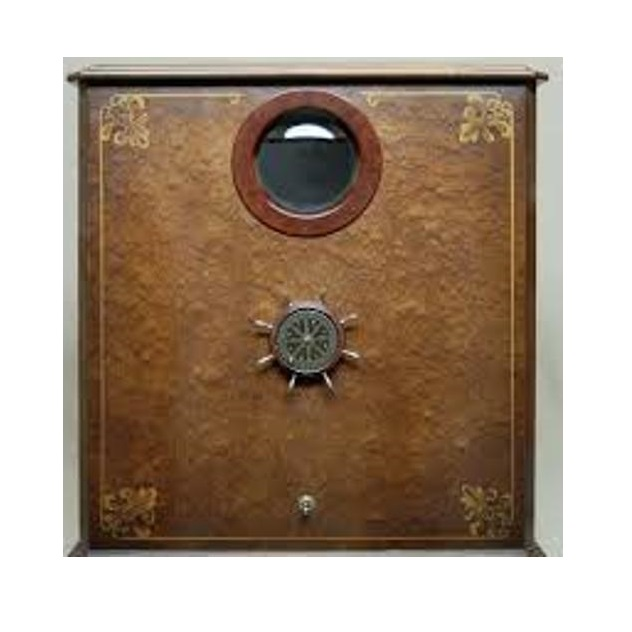
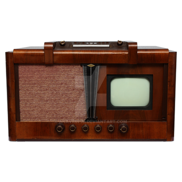
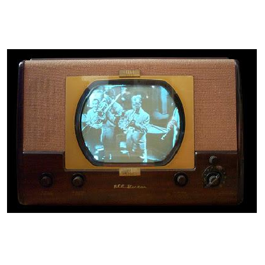
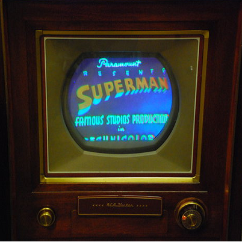
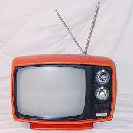
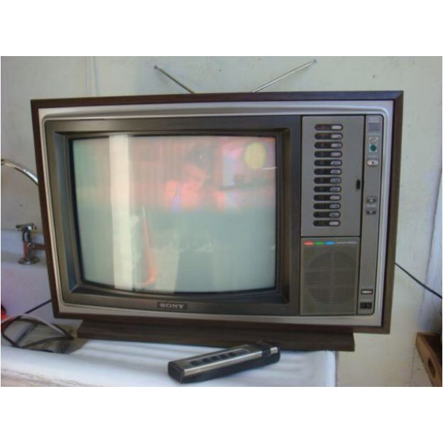
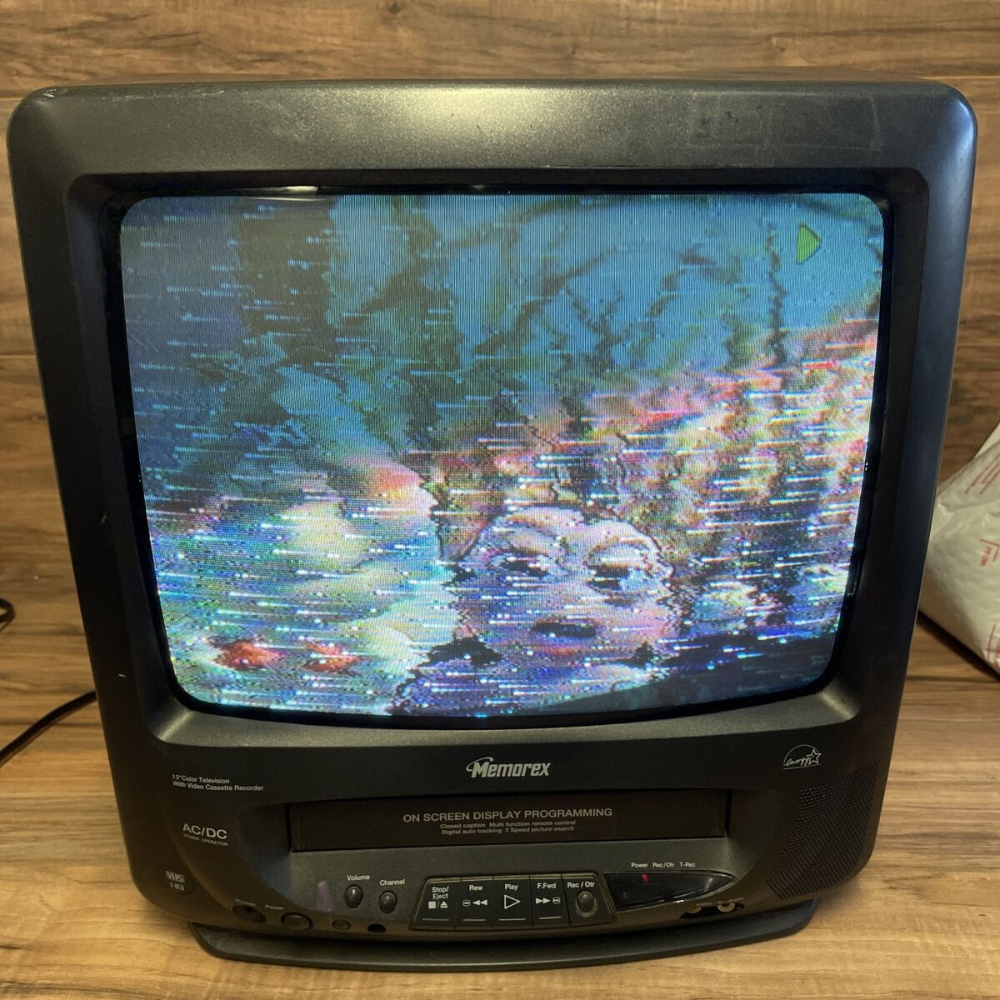
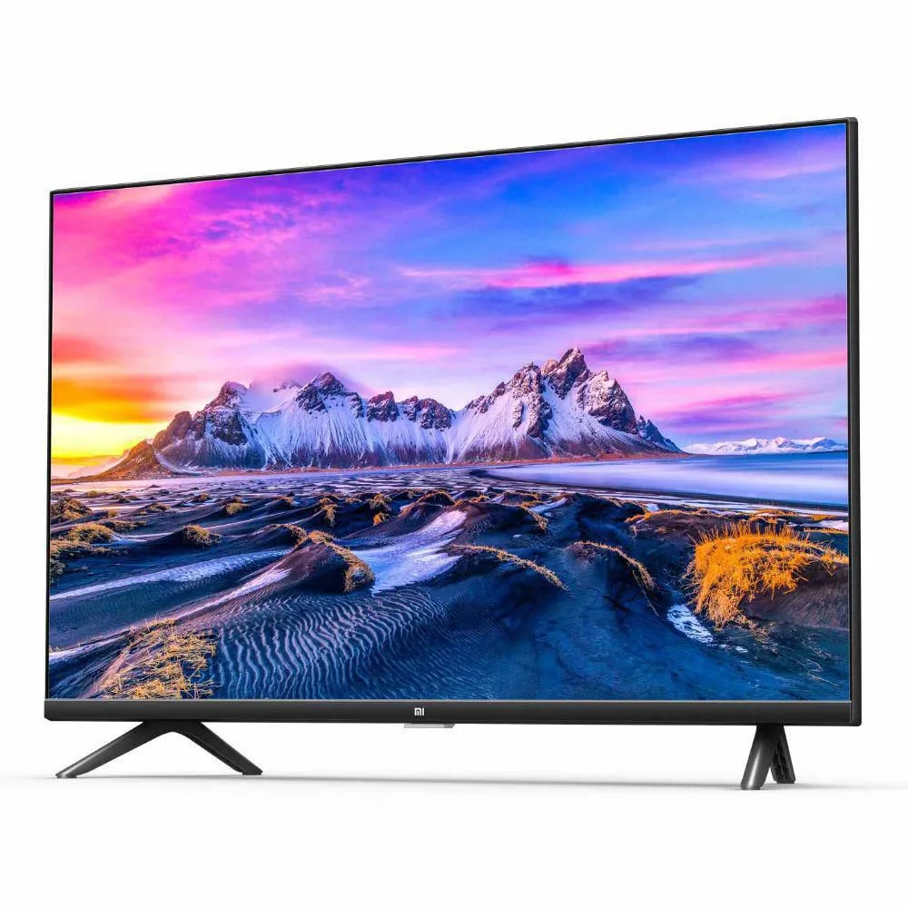
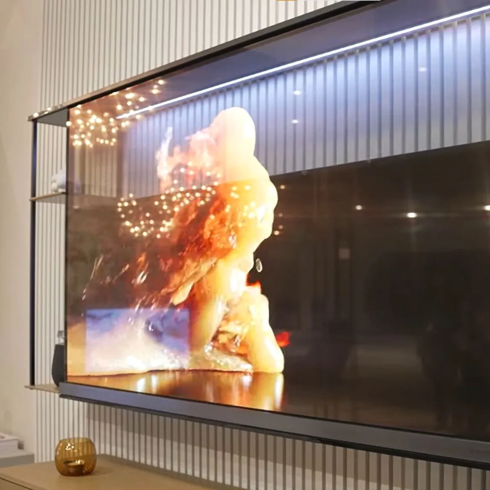

Historia
Acá les contamos una breve historia de este importante medio a lo largo del tiempo desde finales del siglo XIX hasta hoy en día en la era digital
-

1928
Televisor mecánico
La television electromecanica fue un sistema de television basado en el uso de elementos mecanicos y electricps, y no en el uso iconoscopio.
-

1929
Televisor con semivisor
En 1929 el tamaño de las pantallas de los televisores era del tamaño de una tapa de botella de gaseosa con una resolucion de apenas 30 lineas.
-

1948
Televisor por cable
Fue en el mes de junio de 1948 cuando se dio inicio a la television por cable. En los años cincuenta Walson comenzó a experiementar con microondas para llevar la señal desde ciudades distantes.
-

1957
Televisor a color
El 28 de febrero de 1954, se puso a la venta al público general el primer televisor en color utilizando el estandar NTSC. NTSC, llamado así por las siglas de National Television System Committee.
-

1979
Television por cable y satélite
El primer servicio de television por cable pagada en los Estados Unidis y en el primero tambien en utilizar un satélite para distribuir su programación
-

1980
Televisor con control remoto
A principios de los años 1980, cuando se desarrollaron los semiconductores para emitir y recibir radiacion infrarroka, los mandos a adistancia fueton gradualmente cambiando a esta tecnología que, en el siglo XXI, todavía es simplemente usada.
-

1990
Televisor compatible con sistemas de video
La exploracion de una imagen se realiza mediante su descomposicion, primero en fotogramas a los que se llaman cuadros y luego en lineas, leyendo cada cuadro.
-

2008
Televisores digitales
La television digital codifica sus señales de forma binaria, habilitando asi la posivilidad de crear vias de retorno entre consumidor y productor de contenidos, abriendo la posibilidad de crear aplicaciones interactivas.
-

2010
Televisores smart TV
Es la integracion de internet, asi como la convergencia tecnologia entre los ordenadores y estos televisores. Estos dispositivos se centran en los medios interactivos en linea, en la television por internet.
-

2021
Pantallas transparentes
Las pantallas transparentes son la nueva tendencia en tecnología. LG presentó un televisor transparente con una pantalla que se puede ver cuando está encendido o apagado.
-
La
historia
continua
...